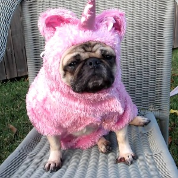
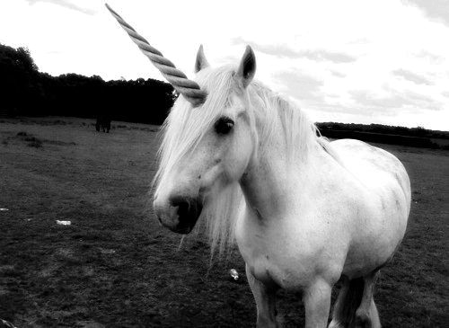
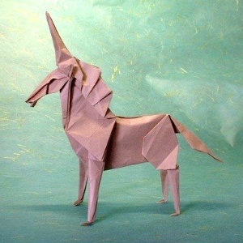
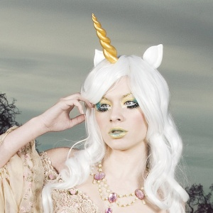

Pugnicórnio
Um unicórnio disfarçado de cachorro. Pequeno, sociável e barulhento.
desvendando o mito...

Por muito tempo acreditou-se que os unicórnios haviam sido extintos ou até mesmo que eles nunca existiram.
Pesquisadores muito sérios discordam. E três pessoas muito confiáveis também.
A long time ago, when the Earth was green
There were more kinds of animals than you have ever seen
The loveliest of all was the unicorn.
There were green alligators and long-necked geese
Some humpty backed camels and some chimpanzees
The unicorns were hiding, playing silly games
Unicorns are magical, so when the rain started pouring
They grew themselves some wings and took to soaring.

Um unicórnio disfarçado de cachorro. Pequeno, sociável e barulhento.

Visto perto de impressoras e trabalhos escolares. Não gosta de chuva.

Confundido com humanos em convenções e filas de credenciamento.